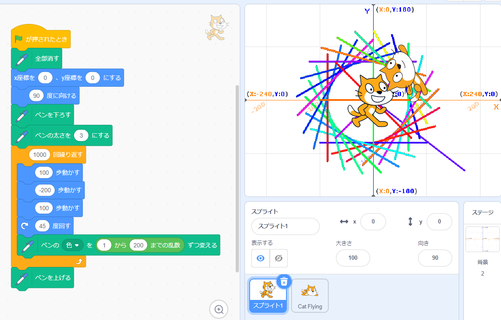
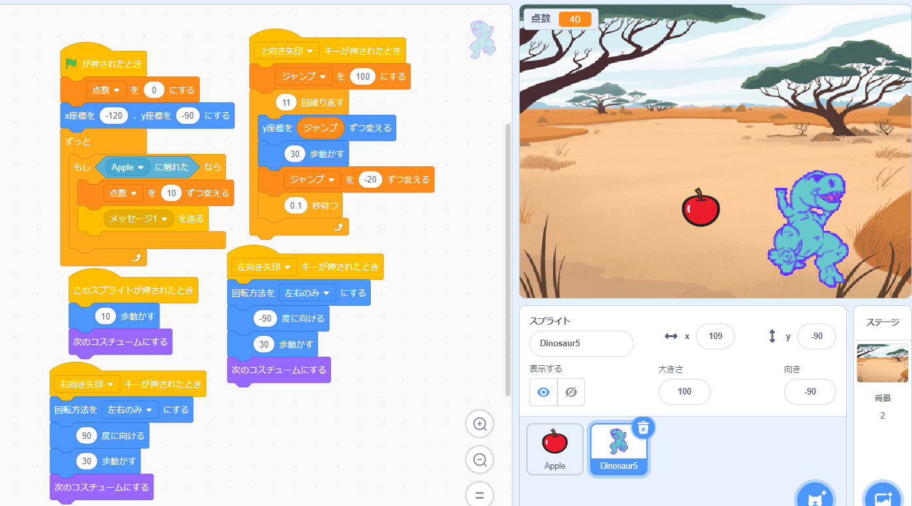

1週目のレポート ： 公大高専１年実習I-1
1B班36番 minogenn
第1週目
1-1 サイエンスアート

1.内容
スクラッチを使って線を書くプログラムを作成した。具体的なプログラム内容としては、
まずスタートが押された際に書いてあったものをリセットするプログラムを作成する。
次にペンを下ろしスプライトが移動したら線が描かれるようにプログラムする。
行動プログラムとしては100歩進んで、200歩下がりもう一度100歩進んで45度回転するようにしました。
そうすることでドーナツのように円を描くきました。
2.感想
数値を変えたり、ブロックの順番を変更することで結果が大きく変わりとても面白かったです。
1-2 ゲーム

1.内容
スクラッチを使ってりんごを取るゲームをプログラミングした。具体的なプログラムの内容としては
まずスプライトには矢印キーで対応した方向に向き、進むようにし、りんごのほうには、
ランダムで上から落ちてくるようにした。また、スプライトにはジャンプの機能を追加した。
ジャンプではもともと教材に載っていたプログラムをアレンジして落下速度を早くした。
2.感想
自分なりにアレンジを加えてそれを思い通りに動かすことが出来たときの達成感が大きかった。
1-3 ホームページ作成
私のホームページ
1.内容
git.hubを用いてホームページを作成する。まずアカウントを作成し、リポジトリに新しくホームページを設定し公開することで完成する。
2.感想
GitHubは別の機会に触ったことがあったので、アカウント作成もホームページ作成もスムーズに行けた。